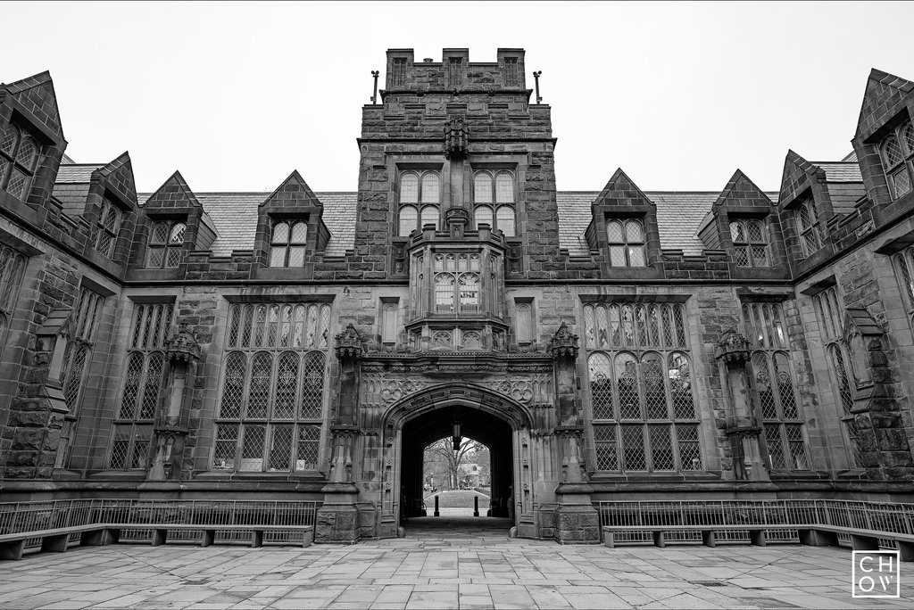

Alan Turing
Educator, Mathmetician

Quick Facts
Birth Date June 23, 1912
Death Date June 7, 1954
Place of birth : London, United Kindom
Place of Death : Wilmslow, United Kingdom
Educator, Mathmetician
Quick Facts
Birth Date June 23, 1912
Death Date June 7, 1954
Place of birth : London, United Kindom
Place of Death : Wilmslow, United Kingdom
At the age of 13, Turing attended a very famous school known as Sherborne School. He was particularly interested in math and science and was recognized for high intelligence. From 1931-1934 he was enrolled at University of Cambridge and was elected a fellow upon his graduation for proving the central limit theorem. Over the next two years, Turing studied at the Institute for Advanced Study in New Jersey. He later earned his PhD at Princeton University and returned to Cambridge for a code-breaking organization in England.
The situation changed when Alan Turing became intensely attracted to another able pupil, Christopher Morcom Alan was inspired to communicate more and become an academic success. But when Christopher died from tuberculosis Alan was devastated. Turing wanted to believe that Christopher’s mind somehow lived on. His emotional turmoil involved a scientific fascination with the problem of mind and brain that underlay his later work.
In 1936, Turing published a paper that is now recognised as the foundation of computer science. Turing analysed what it meant for a human to follow a definite method or procedure to perform a task. For this purpose, he invented the idea of a ‘Universal Machine’ that could decode and perform any set of instructions. Ten years later he would turn this revolutionary idea into a practical plan for an electronic computer, capable of running any program.
After two years at Princeton, developing ideas about secret ciphers, Turing returned to Britain and joined the government’s code-breaking department. In July 1939, the Polish Cipher Bureau passed on crucial information about the Enigma machine, which was used by the Germans to encipher all its military and naval signals. After September 1939, joined by other mathematicians at Bletchley Park, Turing rapidly developed a new machine (the ‘Bombe’) capable of breaking Enigma messages on an industrial scale
All male homosexual activity was illegal until 1967, and Turing was prosecuted when an affair with a young man came to the notice of the police.He made a statement lacking any element of contrition, and was treated severely. Rather than go to prison he accepted probation on the condition of having hormonal treatment which was, in effect, a chemical castration. His security clearance was revoked, ending ongoing work with the government code-breaking department – now called GCHQ (Government Communications Headquarters).Turing’s problems were not over. Defined as a security risk, he was harassed by police surveillance. Alan Turing was found dead in bed by his cleaner on 8 June 1954. He had died from cyanide poisoning the day before. A partly eaten apple lay next to his body. The coroner’s verdict was suicide. His mother argued he had accidentally ingested cyanide during an amateur chemistry experiment, but he had probably planned his death to allow her to think this.
During world war II, Alan Turing was a leading participant in wartime code-breaking. He worked at Bletchley Park and focused on German ciphers. He made five major advances in the field of cryptanalysis, which included creating the Bombe; the electromechanical machine that was responsible for breaking Enigma (german encrypted signals).
He first addressed the issue of artificial intelligence in his paper, "Computing machinery and intelligence," in 1950. He proposed an experiment known as the “Turing Test” which was meant create an intelligence design standard for the tech industry. Over the past several decades, the test has significantly influenced debates over artificial intelligence.
Machine called the Bombe that was created by Alan during World War II to break German Enigma encrypted signals and help win the war.
On October 20, 2016, the British government announced “Turing’s Law” to pardon thousands of gay and bisexual men who were convicted for homosexual acts when it was considered a crime.
Alan Turing was recognized by Princeton University as second most significant alumnus in the history of the school - James Madison held the number 1 position.